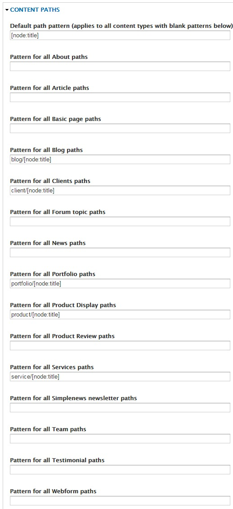
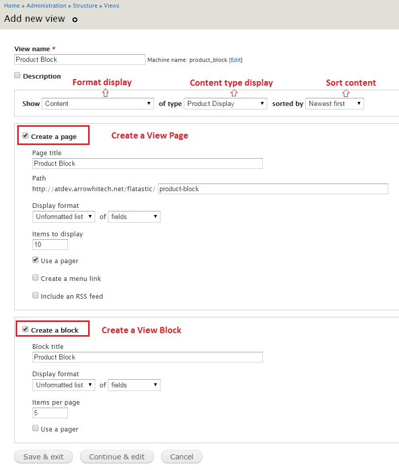
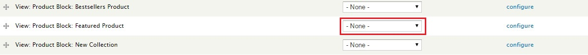
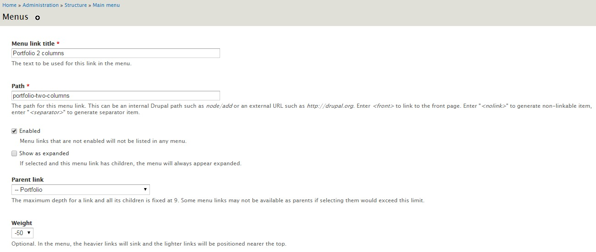

Overview
Flatastic is a powerful and ultra-responsive theme which can perfectly serve any type of business, freelance or interactive sphere creation. For theme support that cannot be found in this documentation, please visit our support forum.
Version 1.0: 05/29/2015
Author: Arrowtheme
Design: mad_velikorodnov
Installation
There are several ways Flatastic can be installed. For existing sites that already have content, the first method will only involve the installation and activation of the theme. The second option includes a full Drupal 7 installation with the same SQL database file used to create the theme demo. Please choose which installation method works best for you and follow the instructions. We do highly recommend you to perform the full installation, especially if you plan on using the Commerce functionality.
Theme Installation only
Download Drupal: https://drupal.org/project/drupal to install default Drupal.
Video: Installing Drupal 7
Option 1:- Visit yourdomain.com/admin/appearance/install
- Upload the /Theme Package/flatastic.zip file
- Enable and set to default
- Extract the /Theme Package/flatastic.zip file and upload via FTP to /sites/all/themes
- Visit yourdomain.com/admin/appearance/
- Scroll down to "DISABLED THEMES" and set and enable Flatastic
Full Drupal Installation
The following steps are designed for people that have experience in installing Drupal and importing databases manually. If you do not feel comfortable with performing these steps by yourself, contact your server administrator for help. NOTE this option is for a completely new Drupal install. Do not import the provided SQL file into an existing Drupal database or you will lose all of your data!
- Create a database for this installation of Drupal and import the SQL file that come with the theme.
- Follow these directions to create the settings.php file. Save this file somewhere so you can copy it over to the Drupal installation we have provided.
- Copy the entire contents of the Full Demo Installation/flatastic folder to the location on your web server where you want your site to be accessed. If you want your primary domain to point to your install of Flatastic, copy everything to the root folder. If you want your site to be accessed as a subsection of your domain (for example: yourdomain.com/drupal) then simply rename the Full Demo Installation/flatastic folder to the desired name and upload to the root of your server. Also be sure to copy over the settings.php file mentioned in the previous step
- Login to your site yourdomain.com/user with the username admin and the password admin123 and visit yourdomain.com/admin/people to change the admin username and password.
- Go through the Drupal configuration found in yourdomain.com/admin/config options and update all the necessary information to reflect your website. Also be sure to visit yourdomain.com/admin/config/media/file-system and change the Temporary Directory.
One Click Install Full Demo
The following steps are designed for people that have experience in installing Drupal and importing databases manually. If you do not feel comfortable performing these steps by yourself, contact your server administrator for help. NOTE this option is for a completely new Drupal install. Do not import the provided SQL file into an existing Drupal database or you will lose all of your data!
- Create a database for this installation of Drupal and import the SQL file that come with the theme.
-
Step 1: Run url http://yourdomain.com/ and Choose Flatastic (Install profile for Flatastic themes)
-
Step 2
-
Step 3
-
Step 4
-
Step 5
-
You can see this video
General Setting
Modules
You can find all of the modules used in the demo in the modules.zip archive in the root of the folder you downloaded from ThemeForest. Not all modules are required to use the theme, but below is a list of modules you will need to utilize various elements of the theme
Copy all folders under "/Theme Package/modules/*" to your existing drupal site "/sites/all/modules/*"
Copy all folder under "/Theme Package/libraries/*" to your existing drupal site "/sites/all/libraries/*", if you dont have "/sites/all/libraries" on your existing site, you need to create one.
General Required Modules
- jQuery update (7.x-2.x-dev)
- ctools
- Views
- Libraries API
- Pathauto
- Token
- Panels
- Block Class
- CKEditor - WYSIWYG HTML editor
- Entity
- Entity reference
- Google Analytics
- Media
- Newsletter
- Quick Tabs
- Rules
- Twitter Block
Shop
- Commerce
- Commerce Add Link (found inside the modules.zip file)
- Flag (for Wishlist functionality)
Notes
Visit yourdomain.com/admin/modules to activate all modules needed to install (select the following checkboxes to ENABLE those modules and click Save configuration).

Activate modules in Drupal core: Blog, Contact and PHP filter.
Set permissions for module Contact (Visit yourdomain.com/admin/people/permissions#module-contact and select all checkboxes of "Use the site-wide contact form").
Set permissions for module Search (Visit yourdomain.com/admin/people/permissions#module-search and select all checkboxes of "Use search").

Text Formats
Remove tag <br> auto insert in Block static: Visit yourdomain.com/admin/config/content/formats/full_html and uncheck Convert line breaks into HTML (i.e. <br> and <p>)
Theme Settings
Visit yourdomain.com/admin/appearance/settings/flatastic to configure your theme's settings. You can select Page layout, Header layout, Footer layout, Add your own custom CSS, Add your own custom logo, etc.
- Breadcrumbs : If you want to Show Breadcrumbs, select this checkbox.
- Show Switcher Control: If you want to Show Control Switcher to the left, select this checkbox.
- Social Widget: If you want to Show Social Widget to the right, select this checkbox.
- Your twitter username: Setting account your twitter username.
- You want enable RTL for your website?: Setting on/off RTL layout.

Settings Theme Layout
Visit yourdomain.com/admin/appearance/settings/flatastic select Tab Design You can select settings theme layout for Flatastic.
- Layout Style: There are 2 options
- Wide is default option
- Boxed
- Header Style: There are 4 options
- Header 1 is default option
- Header 2
- Header 3
- Header 4
- Footer Style: There are 3 options
- Footer 1 is default option
- Footer 2
- Footer 3
- Footer 4
- Footer 5
- Background Layout: you can select the background color to any color custom you like or select background image.
- CSS: you can add your own CSS.
Settings Skins Layout
Visit yourdomain.com/admin/appearance/settings/flatastic select Tab Skin Options You can select settings skin and color layout for Flatastic.
- Skins Layout: There are 4 options
- Default
- Corporate
- Construction
- Interior
- Skin Colors: There are 7 options
- Red (Default)
- Green
- Orange
- Yellow
- Yellow Light
- Blue
- Purple
Settings for Logo, Site Name and slogan
You can change primary Logo by a logo image or use site name text and site slogan.
Visit yourdomain.com/admin/config/system/site-information to configure your Site Name and Site Slogan.
Setting Logo for skins layout
Visit yourdomain.com/admin/appearance/settings/flatastic select Tab Setting Logo for versions You can setting logo for each skin different.
- You can Use only custom logo default (Use only a logo for all page) by check to field checkbox Use only custom logo default (Use only a logo for all page)
- Image Menu: Image for SHOP menu
- Logo Corporate Version: Logo image for Corporate Version
- Logo Construction Version: Logo image for Construction Version
- Logo Interior Version: Logo image for Interior Version
- Logo One page Version: Logo image for One page Version
Add Taxonomy
Flatastic has a total of 7 Vocabulary Taxonomies: Blog Categories, Portfolio Categories, Product Attributes, Product Categories, Product Manufacturer, Product Tags, Tags.
Blog Categories
Visit yourdomain.com/admin/structure/taxonomy/add to add taxonomy Blog Categories.
Visit yourdomain.com/admin/structure/taxonomy/blog_categories/add to Add term for Blog Categories.
Portfolio Categories
Visit yourdomain.com/admin/structure/taxonomy/add to add taxonomy Project Category.
Visit yourdomain.com/admin/structure/taxonomy/portfolio_categories/add to Add term for Portfolio Categories.
Product Categories
Visit yourdomain.com/admin/structure/taxonomy/add to add taxonomy Product Categories.
Visit yourdomain.com/admin/structure/taxonomy/terms/add to Add term for Product Categories.
Similar for others taxonomy
Add Content Type
Art Portfolio
Visit yourdomain.com/admin/structure/types/manage/portfolio/fields to add fields for content type Portfolio (check Add existing field)
Fields:
- Name: The name for Portfolio.
- Body: The description for Portfolio.
- Portfolio Categories: This is a term reference field that is linked to a vocabulary created specifically for this content type.
- Client: The text client for Portfolio.
- Services: The text services for Portfolio.
- Skills: The text skill for Portfolio.
- Tag: This is a term reference field that is linked to a vocabulary created specifically for this content type.
- Image: The default Image field used for uploading the images of Project node.
- Multiple Images: Multiple Image field used for uploading the multi images of Project node.
- Video: The link video of Project node.
- Layout Mode: Layout field is the format of Project node. There are 2 styles: Style 1 (default) and Style 2.
Blog
Visit yourdomain.com/admin/structure/types/manage/blog/fields to add fields for content type Blog (check Add existing field)
Fields:
- Title: The title for Blog.
- Body: The description for Blog.
- Image: The default Image field used for uploading the images of Blog node.
- Blog Categories: This is a term reference field that is linked to a vocabulary created specifically for this content type.
- Rating: The rating field used for rate this content type.
About
Create a content type named About (check Add existing field)

Fields:
- Title: The title for your about.
- Body: The description for your about.
- Image: The default Image field used for uploading the images.
Clients
Create a content type named Client (check Add existing field)
Fields:
- Title: The title for your client.
- Body: The description for your client.
- Image: The default Image field used for uploading the images.
- Website: The website for your client.
Product Display
Create a content type named Product Display (check Add existing field)
Fields:
- Title: The title for product.
- Body: The description for product.
- Product Selection: This is a product reference field that is linked to a product created specifically for this content type.
- Product Categories: This is a term reference field that is linked to a vocabulary created specifically for this content type.
- Images: The default Image field used for uploading the images.
- Product Images: The Product Image field used for uploading the multi images.
- Product Attributes: This is a term reference field that is linked to a vocabulary created specifically for this content type.
- Manufacturer: This is a term reference field that is linked to a vocabulary created specifically for this content type.
- Length: The length for product.
- Weight: The weight for product.
- Custom: The custom for product.
- Specifications: The specifications for product.
- Tags: This is a term reference field that is linked to a vocabulary created specifically for this content type.
- Rating: The rating for product.
- Layout Mode: This is a term reference field that is linked to a vocabulary created specifically for this content type.
Services
Create a content type named Services (check Add existing field)
Fields:
- Title: The title for service.
- Body: The description for service.
- Icon: The text class of the icon you want to use (see Icons Features page for full list).
- Product Image: The image for service.
Team
Create a content type named Team (check Add existing field)
Fields:
- Title: The title for your team.
- Body: The description for your team.
- Image: The default Image field used for uploading the images. It is banner image display on the single your team nodes.
- Job: The Job for member of your team.
- Link Facebook: The Facebook URL for member of your team.
- Link Twitter: The Twitter URL for member of your team.
- Link Google Plus: The Google URL for member of your team.
- Link Pinterest URL: The Pinterest URL for member of your team.
- Link Linkedin URL: The Linkedin URL for member of your team.
Testimonial
Create a content type named Testimonial (check Add existing field)
Fields:
- Title: The title for Testimonial.
- Body: The description for Testimonial.
- Image: The default Image field used for uploading the images avatar .
- Address: The Address for Client.

Config URL aliases
Visit yourdomain.com/admin/config/search/path/patterns to configure URL aliases of Portfolio and Blog.

Add Node
Blog
Visit yourdomain.com/node/add/blog to create a node blog.
Portfolio
Visit yourdomain.com/node/add/portfolio to create a node portfolio.
About
Visit yourdomain.com/node/add/about to create a node for About.
Services
Visit yourdomain.com/node/add/services to create a node for Services.
Team
Visit yourdomain.com/node/add/team to create a node for Team.
Clients
Visit yourdomain.com/node/add/clients to create a node for Clients.
Product Display
Visit yourdomain.com/node/add/product-display to create a node for Product Display.
Testimonials
Visit yourdomain.com/node/add/testimonials to create a node for Testimonials.
Create View Blocks
Flatastic features 26 View Blocks and View Pages created from the content types. You can create the View by importing code in the folder "files_export_views".
For example: import view Blog Block
Visit yourdomain.com/admin/structure/views/import to create a view by importing code from (/files_export_views/blog_block.txt).
- Copy all content from (/files_export_views/blog_block.txt) paste in to Paste page code here.
- View name: "blog_block" is $view->name
- Set NULL for Replace an existing view if one exists with the same name if this block doesn't exist
Result Views:
Result Blocks:
Create View

- Display name: The name for View.
- Title: The title for Views.
- Filter Criteria: Content type display in View.
- Header / Footer : Text display above / below in View.
- Pager: Setting number of items display, paging or not
- Machine Name: Specify name block to assgin region, panel and template file of View
- Theme Information: Specify all file template of View
Clone View
Click clone in top right corner of View
Change Machine Name for new clone Views
Click information to open pop up. This show all templates file of new Clone View
Open source code, clone file template of old view (by old machine name) and rename to new view
Example: Original View
- Machine name: block_featured
- File template: views-view-unformatted--product-block--block-featured.tpl.php
New Clone View:
- Machine name: block_featured_clone
- File template: views-view-unformatted--product-block--block-featured-clone.tpl.php
Click Save, then clear All Caches
Assign View
Assgin to region in block
Visit yourdomain.com/admin/structure/block

Assgin to region in page panel
Visit yourdomain.com/admin/structure/pages and select page to edit
Front Page
The front page seen on the Flatastic demo consists of various block regions. Some are generated by Views, and some are custom blocks with special markup. You can find all of the markup used on the demo front page inside the html_block and content_page_demo folder in the root of the theme folder.
Visit yourdomain.com/admin/structure/block to disable all Blocks in Region Help default (return "No blocks in this region") and click button Save blocks
Block Regions
Flatastic features 34 block regions where you can add your own custom content. Visit yourdomain.com/admin/structure/block to add your own content to the defined block regions. Press "Add Block" to create a new custom block, or select an existing block from the Disabled list below the defined block regions.
All HTML files to create Block Static in folder html_block
- Block Title: The title for Block.
- Block description: The description for Block.
- Region setting: The region display for Block.
- Text format: Text format for slider.
- Show block on specific pages: Show block on specific pages
- All pages except those listed
- Only the listed pages
- Pages on which this PHP code returns TRUE (experts only)
Header Block Regions
Flatastic features 9 header regions: Top Bar Header 1, Top Bar Header 2, Top Bar Header 3, Info Header 3, Top Bar Header 4, Custom Link Header 4, Language, Currency, Menu You can use the "demonstrate block regions" link on yourdomain.com/admin/structure/block to see exactly where these are located, but the names are fairly self explanatory. If you would like to mimic the social icon region seen above the menu on the demo you can use the following markup in a block:
Content Block Regions
Flatastic has a total of 9 content block regions: Slider, Sidebar Slider, Social Widget, Features Blog, Before Content, Content, Right Siderbar, Search, Cart Like the Header regions described above these regions are fairly self explanation. One thing to note is that the before content regions are called outside of the main content wrap so you can use completely full width content (like the Slider) or use your own custom wrappers. Those regions are there to do whatever you like with and are not restricted by any additional markup.
Footer Block Regions
Finally there are 10 footer block regions: Footer Top, Footer Box 1, Footer Box 2, Footer Box 3, Footer Box 4, Footer Box 5, Footer Box 6, Footer Box 7, Footer Box 8 and Footer Bottom.
Menu
Visit yourdomain.com/admin/structure/block/manage/system/main-menu/configure select Region Setting of Flatastic to be Menu Region to show menu.
Flatastic has a block region called Menu which can be used to add any menu block you like. The demo simply uses the default Main Menu block but you can create a custom menu block if you like.
Note: make sure to check the "show as expanded" box on all parent items with children to ensure the dropdown menu works correctly.
Revolution Sliders
Flatastic support Revolution Slider in module. You need install, active for module "art_revolution".
Visit yourdomain.com/admin/art_revolution to set up global settings for Revolution Slider.
Visit yourdomain.com/admin/art_revolution/1/globalsettings to adjust the Global settings for the Revolution Slider.
Home Page Demo
Flatastic supports 6 types of Home Page display:
- Home Variant 1
- Home Variant 2
- Home Variant 3
- Home Variant 4
- Home Variant 5
- Style One Page
Example: Home Page Default
Visit yourdomain.com/admin/structure/pages/import to create a panel page by importing code from (/files_export_panels/files_export_panels.txt).
- Copy all content from (/files_export_panels/homepage.txt) and paste into Paste page code here.
- Page name: "home" is $page->name
- Path: "home" is $page->path
- Allow to overwrite an existing page: Click if you want this page be home page
- Save: Click save button to create the page.
You can drag and drop Blocks in Layout designer to change position of Blocks.
You can apply the same steps to other Home Versions
Shop
Below are main categories list of Product:
- Mens
- Womens
- Dresses
Configure it the same as Home Page Demo
Portfolio Page
Configure it the same as Home Page DemoPortfolio List
Flatastic supports 4 types of Projects display.
- Portfolio 2 columns
- Portfolio 3 columns
- Portfolio 4 columns
- Masonry Portfolio
Portfolio Page - Example: http://arrowtheme.com/flatastic/portfolio-two-columns
This is the standard Portfolio style which utilizes the "Portfolio" View. If you are not using the full demo or did not use the Custom Content module you can use the code in /files_export_views/portfolios.txt to import this View. Then simply place the "View Page" width path is yourdomain.com/portfolio-two-columns .
Views: yourdomain.com/admin/structure/views/view/portfolio
Add Menu: Visit yourdomain.com/admin/structure/menu/manage/main-menu/add to add a Menu named Portfolio 2 columns under parent menu Portfolio.

Single Portfolio
Flatastic supports 2 types of Content.
- Single Portfolio Style 1
- Single Portfolio Style 2
Pages
- Grid View Category Page
- List View Category Page
- Category Page Without Products
- Product Page With Sidebar
- Full Width Product Page
- Wishlist
- Checkout
- Manufacturers
- Manufacturer Page
Configure it the same as Home Page Demo
Blog Page
Configure it the same as Home Page DemoBlog
Blog Page - Example: http://arrowtheme.com/flatastic/blog_grid_v2
This is the standard Blog style which utilizes the "Blog Style Page" View. If you are not using the full demo or did not use the Custom Content module you can use the code in /files_export_views/blog.txt to import this View. Then simply place the "View Page" width path is yourdomain.com/blog.
Views: yourdomain.com/admin/structure/views/view/blog
Add Menu: Visit yourdomain.com/admin/structure/menu/manage/main-menu/add to add a Menu named Grid V2 under parent menu Blog Masonry.
Single Blog
Flatastic supports only 1 type of Content.
Shop Page
Flatastic supports Drupal Commerce.
Drupal Commerce
Flatastic supports the Drupal Commerce module, a powerful eCommerce framework for building online stores. Drupal Commerce has a complete set of documentation which we highly recommend reading if you have never used DC before. We will go over some of the basics and highlight the aspects of the theme that enhance DC and how you can use them on your site. If you do plan on using Drupal Commerce with your installation of Flatastic we also highly recommend you install the full demo content as it will provide you a completely functional configuration of Drupal Commerce to begin working with.
- You need to download and install Drupal Commerce module. Click here to follow this article. - Active module Commerce: Visit http://yoursite.com/admin/modules and active Commerce.
Create the taxonomy of Product Content Type: Product Attributes, Product Categories, Product Manufacturer, Product Tags. Follow this article http://arrowtheme.com/userguide/flatastic/#toc8
Create the fields of Product Content Type. Follow this article http://arrowtheme.com/userguide/flatastic/#toc9
Product Types
When the Commerce module is activated you can visit /admin/commerce to begin configuring Drupal Commerce. We will not be going over every options page, but we will outline the creation of Product Types and explain how that relates to the "Product Display" content type. Visit /admin/commerce/products/types to begin creating your own Product Types. Below is an example of what the fields look like on a Flatastic demo product type:

Product Types have some default fields like Product SKU which are required for Commerce products to function correctly, but you can create as many additional fields as you need for your products.
Creating products using "Product Display"
As described earlier in the Content Types section of the documentation, Flatastic uses a content type called Product Display which acts as a bridge between Drupal and Commerce products. The "Product Reference" field allows you to create your product(s) at the same time of the node creation. Below is a step by step guide for using this content type to create a Drupal Commerce product node in Flatastic:
- 1. Visit /node/add/product to begin creating your product (if you do not have this content type refer to the Content Types portion of the docs for instructions on how to set this up). Enter a title like you would for any other Drupal node.
- 2. The "Product Selection" field select a product.
- 3. Configure attributes your product (Additional Information, Catalog, Size, Brand,...) and press the "Save Product" button.
Creating a "Shop" page.
The key to make everything tie together is the View page which uses the search index to display the products. This is done by creating a View like you create any other View, but by selecting your search index from the "Show" select menu during the initial view creation. This View is an unformatted list of the rendered entity, and no other special configurations are needed. The following template files are associated with Flatastic's demo shop page:
Configure it the same as Home Page DemoShop Page link: http://arrowtheme.com/flatastic/category-grid
Flatastic supports 2 types of List Shop display.
- Grid View Category Page
- List View Category Page
Single Shop
Flatastic supports 2 types to display content.
- Product Page With Sidebar
- Full Width Product Page
Wishlist
To make use of the Wishlist functionality that can be seen on the Flatastic demo you will need to install the Flag module. After that, you need to visit /admin/structure/flags/import to import the following code:
$flags = array();
// Exported flag: "Shop".
$flags['shop'] = array(
'entity_type' => 'node',
'title' => 'Shop',
'global' => '0',
'types' => array(
0 => 'product_display',
),
'flag_short' => 'Add to Wishlist',
'flag_long' => '',
'flag_message' => '',
'unflag_short' => 'Remove Wishlist',
'unflag_long' => '',
'unflag_message' => '',
'unflag_denied_text' => '',
'link_type' => 'toggle',
'weight' => 0,
'show_in_links' => array(
'full' => 'full',
'teaser' => 'teaser',
'rss' => 0,
'search_index' => 0,
'search_result' => 0,
'art_portfolio' => 0,
'token' => 0,
),
'show_as_field' => 1,
'show_on_form' => 0,
'access_author' => '',
'show_contextual_link' => 0,
'i18n' => 0,
'api_version' => 3,
);
return $flags;
Then if you don't already have it you can use the code in /files_export_views/wishlist-block.txt to create a View to display a block of the Wishlist items.
Access Denied
Visit yourdomain.com/node/add/page to create a node basic page. You can use the code demo content in /content_page_demo/Access-denied.html
Shortcodes
- Accordion
- Alert
- Buttons
- Carousel
- Columns
- Icons
- Tabs
Configure it the same as Access Denied
Contacts
- Contacts
Edit Map and infomation contact: Visit yourdomain.com/admin/structure/block, configure Contact Block Page
Edit Contact Form : Visit yourdomain.com/admin/content, edit Contact Form (type Webform), select tab WEBFORM
Add field Contact Form :
Setting email Contact Form :
FAQ
Q: When I tried to import file sql into this mySite DB, mySql pops error message saying #1062 Duplicate entry for key PRIMARY
A: Please create a new db (empty db) and import file sql. If you import db to one available, it will be error.
Q: How to remove the Breadcrumbs, Switcher Control or Social Widget?
A: Please go to yourdomain.com/admin/appearance/settings/flatastic, in tab General, uncheck checkbox and Save.
Q: How can we choose different homepage versions for our homepage?
A: Please go to yourdomain.com/admin/config/system/site-information, change link in Default front page field. Example: index-layout-2.
Q: How to change the fonts style for the theme?
A: Please open file:
\sites\all\themes\flatastic\css\style.cssImport new font after line 22 (font Roboto is default). Example:
@import url(http://fonts.googleapis.com/css?family=NameOfNewFont:300,700,500,300italic);Then search and replace all font-family by NameOfNewFont in all file css.
Q: How to hidden notice?
A: Please open file
\sites\all\themes\flatastic\index.phpand put code in top of file
error_reporting(0);
ini_set('display_errors', FALSE);
ini_set('display_startup_errors', FALSE);
Q:
How to fix this error?
Fatal error: Allowed memory size of 33554432 bytes exhausted (tried to allocate 1041532 bytes) in /path-to-website/includes/database.mysql-common.inc on line 41
A: Please open file
\sites\all\themes\flatastic\index.phpand put code in top of file
ini_set('memory_limit','128M');
Q: How to config slider for each homepage?
A: Please go to yourdomain.com/admin/structure/block/, then config block "ReVolution Slider Block"
Thank You
Thank you very much for purchasing the Flatastic Multipurpose Drupal 7 theme. Once again if you have any issues or feedback please contact via the ThemeForest author page. Enjoy using Flatastic!
© 2015 Arrowtheme.